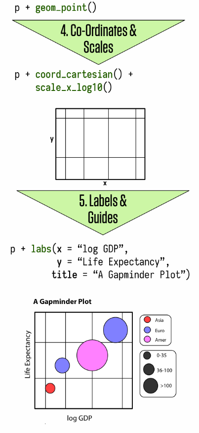

Main Ideas for this Workshop
| - Hands-on Data Visualization Workshop. |
- Show a complete workflow to build nice visualization.
–
Prepare your data before plotting.
- Show you how to go from your models to nice visualizations.
–
class: center, middle
| - Hands-on Data Visualization Workshop. |
–
–
class: center, middle
Always better to present your results with a graph
And keep all (or most of) your models and descriptive tables in the appendix.
class:inverse, center, middle
Data Visualization involves connecting (mapping) variables from your data to graphical representations.
Ggplot provides you with a language to map data and to a plot.
Ggplot works by connecting data and visual components through a function called aesthethics mapping (aes).
Every graph is built layer by layer starting with your data, aesthetics mappings, geometric decisions, and then embelisshment of the plot.
.pull-left[
 ]
]
.pull-right[ ]
Let’s first call our packages. I am using the package packman to help me manage my libraries.
pacman::p_load(tidyverse, gapminder, kableExtra, tidyr, ggthemes, patchwork, broom)This is a tidy data:
knitr::kable(head(gapminder), format = 'html')| country | continent | year | lifeExp | pop | gdpPercap |
|---|---|---|---|---|---|
| Afghanistan | Asia | 1952 | 28.801 | 8425333 | 779.4453 |
| Afghanistan | Asia | 1957 | 30.332 | 9240934 | 820.8530 |
| Afghanistan | Asia | 1962 | 31.997 | 10267083 | 853.1007 |
| Afghanistan | Asia | 1967 | 34.020 | 11537966 | 836.1971 |
| Afghanistan | Asia | 1972 | 36.088 | 13079460 | 739.9811 |
| Afghanistan | Asia | 1977 | 38.438 | 14880372 | 786.1134 |
There are three interrelated rules which make a dataset tidy.

data <- read_csv("https://docs.google.com/spreadsheets/d/e/2PACX-1vQ56fySJKLL18Lipu1_i3ID9JE06voJEz2EXm6JW4Vh11zmndyTwejMavuNntzIWLY0RyhA1UsVEen0/pub?gid=0&single=true&output=csv")## [1] "state" "pollster" "sponsor"
## [4] "start.date" "end.date" "entry.date.time..et."
## [7] "number.of.observations" "population" "mode"
## [10] "biden" "trump" "biden_margin"
## [13] "other" "undecided" "url"
## [16] "include" "notes"data_long %>%
select(Vote_Choice, Vote) %>%
slice(1:5)## # A tibble: 5 x 2
## Vote_Choice Vote
## <chr> <dbl>
## 1 biden 45
## 2 trump 50
## 3 biden 52
## 4 trump 40
## 5 biden 47
Mapping is how you connect your data and variables with the visual representations of a graph. We will do this in two steps.
–
–
–
–
ggplot(data=national_polls, # the data step
aes(x=end.date, y=Vote)) + # the map step
geom_point() # the geom step
ggplot(data=national_polls, # the data step
aes(x=end.date, y=Vote,
color=Vote_Choice)) + # the map step
geom_point()
ggplot(data=national_polls, # the data step
aes(x=end.date, y=Vote,
color=Vote_Choice,
shape=Vote_Choice)) + # the map step
geom_point() 
ggplot(data=national_polls, # the data step
aes(x=end.date, y=Vote,
color=Vote_Choice,
shape=Vote_Choice,
alpha=end.date)) + # the map step
geom_point() 
ggplot(data=national_polls, # the data step
aes(x=end.date, y=Vote)) + # the map step
geom_smooth(aes(linetype=Vote_Choice)) +
geom_point(aes(color=Vote_Choice), alpha=.2)
You can use multiple aesthetics together.
One variables for each aesthethic (that’s why your data should be tidy)
Outside of Aes, the aesthetics work with a simple value, not a variable linking data and geoms.
ggplot(data=national_polls,
aes(x=end.date, y=Vote, color=Vote_Choice, fill=Vote_Choice)) +
geom_point(alpha=.2) +
geom_smooth()
ggplot(data=national_polls,
aes(x=end.date)) +
geom_density(fill="steelblue")
ggplot(data=state_polls %>% filter(state%in%swing_states)) +
geom_density(aes(x=end.date, fill=state), alpha=.3) +
facet_wrap(~state, ncol=3)
ggplot(data=data_long,
aes(x=end.date, fill=mode)) +
geom_bar() +
scale_fill_brewer(palette = "Set3")
# Another example
ggplot(state_polls %>% filter(state%in%swing_states),
aes(x=Vote,y=fct_rev(state), fill=Vote_Choice)) +
geom_boxplot() +
scale_fill_manual(values=c("biden"="blue","trump"="red")) 
After you are set on the mapping and geoms, the next step is to adjust the scale of your the graph. These functions are usually on the form: scale_aesthethic_type.
scale_x_log10: To convert the numeric axis to the log scalescale_y_reverse: To reverse the scalescale_fill_manual: To create your own discrete set of fill.scale_colour_brewer(): Change the Pallet of Coloursp <- ggplot(data=national_polls,
aes(x=end.date, y=Vote, color=Vote_Choice,
shape=Vote_Choice, fill=Vote_Choice)) +
geom_point(alpha=.2) +
geom_smooth() +
scale_shape_manual(values =c(21, 23)) +
scale_fill_manual(values=c("red", "blue")) +
scale_color_manual(values=c("red", "blue"),
labels=c("Biden", "Trump"),
name= "Vote Choice") +
scale_x_date(date_breaks = "1 month", date_labels = "%b %d") +
guides(fill=FALSE, shape=FALSE) +
labs(x = "End of the Poll", y = "Results",
title = "Polls US Presidential Election",
subtitle = "",
caption = "Source: The Economist") Most of the adjustments you can make on your plot go inside of the theme function.
When working in a paper, you should be consistent with your graphs.
Create your own theme, and apply to all your codes.
# Set up my theme ------------------------------------------------------------
my_font <- "Palatino Linotype"
my_bkgd <- "#f5f5f2"
pal <- RColorBrewer::brewer.pal(9, "Spectral")
my_theme <- theme(text = element_text(family = my_font, color = "#22211d"),
rect = element_rect(fill = my_bkgd),
plot.background = element_rect(fill = my_bkgd, color = NA),
panel.background = element_rect(fill = my_bkgd, color = NA),
panel.border = element_rect(color="black"),
strip.background = element_rect(color="black", fill="gray85"),
legend.background = element_rect(fill = my_bkgd, color = NA),
legend.key = element_rect(size = 6, fill = "white", colour = NA),
legend.key.size = unit(1, "cm"),
legend.text = element_text(size = 10, family = my_font),
legend.title = element_text(size=10),
plot.title = element_text(size = 22, face = "bold", family=my_font),
plot.subtitle = element_text(size=16, family=my_font),
axis.title= element_text(size=14),
axis.text = element_text(size=8, family=my_font),
axis.title.x = element_text(hjust=1),
strip.text = element_text(family = my_font, color = "#22211d",
size = 10, face="italic"))# This sets up for all your plots
theme_set(theme_bw() + my_theme) #<<.pull-left[
p +
theme_bw() +
my_theme]
| .pull-right[ |
 |
| ] |
There are several packages in R and built-in in gpplot with pre-built themes. Some examples from ggthemes and hrbrthemes
theme_minimal()
theme_economist()
theme_fivethirtyeight()
theme_ipsum()
.pull-left[
p +
theme_minimal(base_size=12) ]
]
.pull-right[
p +
theme_fivethirtyeight()  ]
]
We have discussed how to go from your raw data to informative visualization plots.
From this section forward, we will use the same logic to go from your statistical models outputs to plots.
We will use David Robinson’s broom package to help us out, and the tidyverse package purrr.
# Separate the data
biden <- national_polls %>%
filter(Vote_Choice=="biden") %>%
mutate(first_day=min(end.date, na.rm=TRUE),
days=as.numeric(end.date-first_day))
# simple linear model
lm_time <- lm(Vote~ days, data=biden)tidy: to extract the model main parametersaugment: to extract observation-level statistics (predictions)glance: to extract model-level statistics.# a data frame
results <- tidy(lm_time)
results## # A tibble: 2 x 5
## term estimate std.error statistic p.value
## <chr> <dbl> <dbl> <dbl> <dbl>
## 1 (Intercept) 46.7 0.318 147. 0.
## 2 days 0.0164 0.00156 10.5 2.06e-23augment(lm_time)## # A tibble: 495 x 8
## Vote days .fitted .resid .std.resid .hat .sigma .cooksd
## <dbl> <dbl> <dbl> <dbl> <dbl> <dbl> <dbl> <dbl>
## 1 52 305 51.7 0.339 0.126 0.00653 2.71 0.0000519
## 2 52 304 51.6 0.355 0.132 0.00645 2.71 0.0000564
## 3 51 304 51.6 -0.645 -0.239 0.00645 2.71 0.000185
## 4 52 306 51.7 0.323 0.120 0.00661 2.71 0.0000476
## 5 48 304 51.6 -3.64 -1.35 0.00645 2.70 0.00593
## 6 50 305 51.7 -1.66 -0.616 0.00653 2.71 0.00125
## 7 53 305 51.7 1.34 0.497 0.00653 2.71 0.000810
## 8 53 306 51.7 1.32 0.491 0.00661 2.71 0.000800
## 9 53 305 51.7 1.34 0.497 0.00653 2.71 0.000810
## 10 50 306 51.7 -1.68 -0.622 0.00661 2.71 0.00129
## # … with 485 more rows# Plot
augment(lm_time, se_fit = TRUE) %>%
mutate(lb=.fitted - 1.96*.se.fit,
ub=.fitted + 1.96*.se.fit) %>%
ggplot(data=.) + geom_ribbon(aes(y=.fitted, ymin=lb,
ymax=ub, x=days), alpha=.2) +
geom_line(aes(y=.fitted, x=days), color="blue") +
geom_point(aes(y = Vote, x=days), alpha=.2) 
What if I want to run the same model for multiple subgroups? Or multiple different models?
Use purrr for functional programming. This is where R and tidyverse gets really beautiful.
The logic is simple. We will nest our data, run models in the subgroups, tidy the results, and unnest everything in a tidy format dataset.
# Step 1: Nest your data
nested_data <- state_polls %>%
filter(Vote_Choice=="biden") %>%
mutate(first_day=min(end.date, na.rm=TRUE),
days=as.numeric(end.date-first_day)) %>%
group_by(state) %>% #<<
nest() #<<
nested_data## # A tibble: 47 x 2
## # Groups: state [47]
## state data
## <chr> <list>
## 1 MT <tibble [18 × 18]>
## 2 ME <tibble [19 × 18]>
## 3 IA <tibble [32 × 18]>
## 4 WI <tibble [95 × 18]>
## 5 PA <tibble [112 × 18]>
## 6 NC <tibble [104 × 18]>
## 7 MI <tibble [112 × 18]>
## 8 FL <tibble [105 × 18]>
## 9 AZ <tibble [88 × 18]>
## 10 MN <tibble [34 × 18]>
## # … with 37 more rowsThe data column is called a list-column because it works as a list where every element has a entire dataset.
With a list of datasets, we can use functional programming in purrr to run the same models for each dataset.
nested_data <- nested_data %>%
mutate(model=map(data, ~ lm(Vote~days, .x))) #<<
nested_data## # A tibble: 47 x 3
## # Groups: state [47]
## state data model
## <chr> <list> <list>
## 1 MT <tibble [18 × 18]> <lm>
## 2 ME <tibble [19 × 18]> <lm>
## 3 IA <tibble [32 × 18]> <lm>
## 4 WI <tibble [95 × 18]> <lm>
## 5 PA <tibble [112 × 18]> <lm>
## 6 NC <tibble [104 × 18]> <lm>
## 7 MI <tibble [112 × 18]> <lm>
## 8 FL <tibble [105 × 18]> <lm>
## 9 AZ <tibble [88 × 18]> <lm>
## 10 MN <tibble [34 × 18]> <lm>
## # … with 37 more rows# first, remove the intercept
to_plot <- nested_data %>%
filter(term!="(Intercept)") %>%
mutate(ub=estimate+1.96*std.error,
lb=estimate-1.96*std.error) %>%
drop_na()
# graph
ggplot(to_plot, aes(x=fct_rev(state),y=estimate, ymin=lb, ymax=ub)) +
geom_pointrange(shape=21, fill="blue", color="black", alpha=.8) +
geom_hline(yintercept = 0, linetype="dashed", color="gray") +
coord_flip() +
theme_minimal() +
labs(x = "Linear Time Trend by State", y= "Biden Support in the Polls") class: center, middle

–
To conclude our workshop, I will show you the code my recent paper (co-authored with Ernesto Calvo) forthcoming at the Latin American Politics and Society.
The paper is about partisanship and risk perceptions about COVID-19. I will focus on the descriptive analysis and the simple regression models we use to show partisan difference of risk perceptions in Brazil.
The paper and replication files can be found here.
load("CV_data.Rdata")
library(tidyverse)
library(tidyr)
# Untidy
d %>% select(covid_job, covid_health, covid_government)## # A tibble: 2,362 x 3
## covid_job covid_health covid_government
## <fct> <fct> <fct>
## 1 Very unlikely Somewhat unlikely Somewhat Unappropriate
## 2 Very unlikely Somewhat Likely Somewhat Appropriate
## 3 Very Likely Very Likely Very Appropriate
## 4 Very Likely Very Likely Somewhat Unappropriate
## 5 Somewhat Likely Somewhat Likely Somewhat Appropriate
## 6 Somewhat Likely Somewhat unlikely Somewhat Appropriate
## 7 Very unlikely Somewhat Likely Very Appropriate
## 8 Somewhat unlikely Somewhat Likely Very Appropriate
## 9 Very unlikely Somewhat Likely Somewhat Unappropriate
## 10 Very Likely Somewhat unlikely Somewhat Unappropriate
## # … with 2,352 more rowsd_pivot <- d %>%
pivot_longer(cols=c(covid_job, covid_health,
covid_government),
names_to="covid",
values_to="covid_values") ## # A tibble: 7,086 x 2
## covid covid_values
## <chr> <fct>
## 1 covid_job Very unlikely
## 2 covid_health Somewhat unlikely
## 3 covid_government Somewhat Unappropriate
## 4 covid_job Very unlikely
## 5 covid_health Somewhat Likely
## 6 covid_government Somewhat Appropriate
## 7 covid_job Very Likely
## 8 covid_health Very Likely
## 9 covid_government Very Appropriate
## 10 covid_job Very Likely
## # … with 7,076 more rowsdata_nested <- d_pivot %>%
group_by(covid) %>%
nest() %>%
mutate(model=map(data, ~
lm(as.numeric(covid_values) ~ #<<
runoff_haddad + #<<
runoff_bolsonaro + #<<
income + gender + work + #<<
as.numeric(education) + age , data=.x)), #<<
res=map(model,tidy)) %>%
unnest(res) %>%
mutate(lb=estimate - 1.96*std.error,
up= estimate + 1.96*std.error)Everything we need is here: group_by, nest, model, unnest.
.center[
 ]
]
Fix the labels.
Get your labels correct before plotting.
By correct I mean: names and order.
–
to_plot <- data_nested %>%
filter(str_detect(term, "runoff")) %>%
mutate(labels_iv=fct_recode(term, "Haddad Voters"="runoff_haddadOn",
"Bolsonaro Voters"="runoff_bolsonaroOn")) %>%
mutate(outcome= ifelse(covid=="covid_job",
"How likely is it that you \n could lose your job? ",
ifelse(covid=="covid_health",
"How likely will your health \n be affected by COVID-19?",
"Has the government response \n been appropriate ?"))) class: center, middle